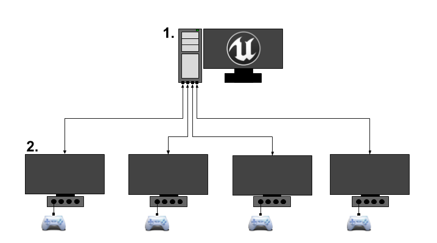
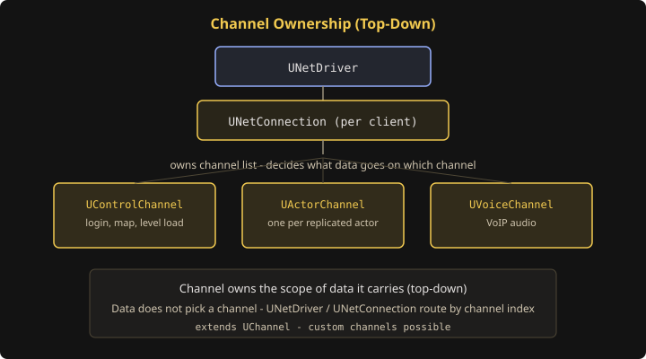

// UE Replication · Part 1. 이론
비유를 통해 배우는 네트워크 기본 개념
UE5 리플리케이션을 택배·노선·권한 비유로 이해하는 이론 편


언리얼 엔진은 전형적인 서버-클라이언트 모델을 이용하여 네트워크를 구성합니다.
- 네트워크에 있는 하나의 컴퓨터가 서버가 되어 멀티플레이어 게임 세션을 호스팅합니다.
- 이 서버에 접속한 다른 모든 플레이어의 컴퓨터는 클라이언트가 됩니다.
- 서버는 접속된 각 클라이언트와 GameState(게임 월드 상태) 정보를 공유하고 서로 통신할 수 있는 수단을 제공합니다.
- 게임을 호스팅하는 서버만이 Authority 있는 GameState를 보유합니다.
AGameState 클래스를 말하는 것이 아닙니다.다르게 말한다면, 서버가 멀티플레이어 게임이 실제로 벌어지는 곳이고, 클라이언트는 그 모습을 투영하여 받아오는 것에 불과합니다.
예를 들어 캐릭터의 WASD 등의 입력은 클라이언트가 발생시키지만, 게임 세계에서의 움직임은 서버에서 발생된 뒤 클라이언트가 받습니다.
클라이언트는 IO 장치를 통한 입력만 일으킬 수 있고, 이 입력에 대한 모든 반응은 서버를 거쳐 받아야 합니다. 그 결과에 따라 UI, 이펙트, 객체 생성 등 다양한 동작을 수행합니다.
WASD처럼 즉각성이 중요한 입력은 낙관적 예측으로 클라이언트에서 먼저 허용하되, 서버 검증이 실패하면 보정 혹은 롤백합니다.
결국 우리가 알아야 하는 것은 서버에서 게임 세상 데이터를 클라이언트에게 어떻게 계속 넘겨주는가? 입니다.
UE5에서는 서버가 GameState 정보를 리플리케이션(Replication)으로 클라이언트에 송신하고, 클라이언트는 받은 정보를 시뮬레이션합니다.
예시 — 무기 발사 흐름
플레이어 1이 로컬 머신에서 입력을 눌러 무기를 발사합니다.
1. 플레이어 1의 로컬 폰이 서버 폰에 무기 발사 명령을 전달합니다.
2. 서버의 플레이어 1 무기가 발사체를 생성합니다.
3. 서버가 각 클라이언트에 발사체 사본 생성을 지시합니다.
4-1. 서버 무기가 각 클라이언트에 사운드·이펙트 재생을 지시합니다.
(NetMulticast RPC를 사용하는 경우)
4-2. 클라이언트 발사체 사본이 로컬에서 사운드·이펙트를 재생합니다.
(일반적인 Replication의 경우)
- 게임 세상의 진짜 데이터는 오직 서버에 있으며, 클라이언트는 함부로 변경할 수 없습니다.
- 클라이언트가 바꾸려면 입력으로 서버에 요청하고, 서버가 검증한 뒤 바꿉니다.
- 어떠한 클라이언트도 신뢰할 수 없습니다.
네트워크 모드(Network mode)는 네트워크 멀티플레이어 세션과 컴퓨터의 관계를 설명합니다. 언리얼 엔진은 이 ENUM 값으로 각 컴퓨터의 역할을 구분하고 로직을 다르게 처리합니다.
| NetMode | 한글 | 요약 |
|---|---|---|
| Standalone | 독립형 | 원격 접속 없는 서버. 서버·클라이언트 로직 모두 실행. 싱글/로컬 멀티플레이. |
| Client | 클라이언트 | 원격 서버에 접속한 클라이언트. HasAuthority 등 서버 전용 로직 불가. |
| Listen Server | 리슨 서버 | 호스트 클라이언트가 서버 역할도 겸함. 인프라 비용↓, 공정성·보안 이슈↑. |
| Dedicated Server | 데디케이티드 서버 | 로컬 플레이어 없는 원격 서버. CLI·무헤드. MMO/MOBA/FPS 등 대규모에 적합. |
독립형 (Standalone)
게임이 원격 클라이언트 접속을 허용하지 않는 서버로 실행됩니다. 서버 측·클라이언트 측 로직을 모두 실행합니다.
클라이언트 (Client)
게임이 서버에 접속된 클라이언트로 실행됩니다.
HasAuthority 등 권한이 필요한 서버 측 코드를 실행할 수 없습니다.
리슨 서버 (Listen Server)
호스트 클라이언트가 서버이자 클라이언트가 되는 구조입니다. 서버 인프라 비용을 절감할 수 있지만, 호스트의 Ping이 0에 가까워 공정성 문제가 생길 수 있습니다. 가벼운 협동·경쟁 멀티플레이어에 자주 쓰입니다.
데디케이티드 서버 (Dedicated Server)
로컬 플레이어가 없는 원격 서버입니다. 그래픽·사운드·입력 없이 CLI로 구동되며, 모든 클라이언트에게 가장 공정합니다. MMO, MOBA, FPS, TPS 등에 사용됩니다.
액터의 네트워크 역할은 네트워크 게임 중 액터를 제어할 컴퓨터를 구분합니다. NetMode와 별도로 존재하는 이유는, 서버가 GameState의 다양한 액터에 대한 통제권을 가진 개별 클라이언트를 모두 구별해야 하기 때문입니다.
Authority 있는 액터는 스테이트를 제어하며 다른 컴퓨터로 리플리케이트합니다. Remote Proxy는 원격 액터의 사본으로, Authority 액터로부터 정보를 수신합니다.
| Role | 설명 |
|---|---|
| None | 네트워크 게임에서 역할 없음. 리플리케이트하지 않음. |
| Authority | 오소리티 액터. 원격 프록시로 정보를 리플리케이트. |
| Simulated Proxy | 다른 컴퓨터 Authority에 의해 완전히 제어되는 원격 프록시. 발사체·픽업 등. |
| Autonomous Proxy | 일부 함수를 로컬에서 수행하되 Authority로부터 보정을 받는 원격 프록시. 플레이어 폰 등. |
리플리케이션 파이프라인을 택배 시스템에 비유하면 다음과 같습니다.
| UE 개념 | 택배 비유 |
|---|---|
| Actor | 상품 |
| 변경된 속성 | 바뀐 내용물 |
| Bunch | 포장 박스 |
| Packet | 배송 트럭 |
| Connection | 배송 노선 |
현실에서 주소로 주거지를 식별하듯, UE에서는 개별 UObject를
네트워크 상에서 식별·동기화할 때 NetGUID를 사용합니다.
서버와 클라이언트는 서로 다른 가상 메모리 환경을 가지므로 포인터가 아닌 고유 ID로 같은 객체에 접근해야 합니다.
이를 담당하는 UPackageMap은 연결마다 1개씩 존재하며,
서버에서는 모든 네트워크 객체의 NetGUID ↔ 경로 양방향 딕셔너리입니다.
클라이언트는 현재 알고 있는 NetGUID만 부분적으로 보유합니다.
코드 수준 흐름은 Part 2 · Chapter 2. 최초 복제에서 다룹니다.
서버-클라이언트 간의 식별 방법을 배웠으니, 이제 어떻게 보내는지를 배워야 합니다.
언리얼 엔진은 다양한 유형의 데이터를 전송하기 위해 전용 네트워크 통로를 구성했으며, 이것을 채널(Channel)이라고 합니다.
UChannel을 상속하면 개발자 전용 커스텀 채널도 만들 수 있지만,
보통은 이미 만들어진 대중적인 채널을 사용합니다.

컨트롤 채널 (UControlChannel)
클라이언트와 서버 간의 접속(로그인), 맵 이동, 레벨 로드 등 세션 및 연결 상태를 제어하는 핵심 메시지를 주고받는 채널입니다.
액터 채널 (UActorChannel)
서버에서 클라이언트로 리플리케이션되는 각 액터(폰, 캐릭터 등)마다 생성되는 채널입니다. 서버가 채널을 열면 클라이언트가 해당 액터를 생성하고, 서버가 채널을 닫으면 클라이언트에서 액터가 파괴됩니다.
보이스 채널 (UVoiceChannel)
게임 내 플레이어 간 음성 채팅(VoIP) 데이터를 전송하기 위한 전용 채널입니다.
UNetDriver, UNetConnection 등 상위 객체가 채널 리스트를 소유하며,
각 네트워크 접근에서 몇 번 채널에 어떤 데이터를 보낼지가 결정됩니다.
여기까지는 데이터를 보내는 방법을 가장 추상적으로 살펴봤습니다. 이제부터는 데이터 특성에 따른 관리 차이를 설명합니다.
언리얼 엔진은 Tick 기반으로 1프레임에 1번씩 호출되는 함수들이 GameState를 관리합니다. 입력, 네트워크 객체 사용, 서버 검증 등 모든 로직도 이 틱 루프 안에서 돌아갑니다.
어떤 데이터는 전송이 반드시 보장되어야 하고,
어떤 데이터는 매 틱마다 보장되지 않아도 언젠가 한 번 가면 충분합니다.
이를 위해 UE는 Reliable, Unreliable 두 가지 UFUNCTION 키워드로
네트워크 객체의 관리 속성을 지정합니다.
| 구분 | Unreliable | Reliable |
|---|---|---|
| 재전송 | 없음 | 있음 |
| ACK | 엔진 레벨 ACK 없이 송수신 | ACK 필수 |
| 순서 | 보장 없음 | 보장 |
| 도착 콜백 | 보장 없음 | 보장 |
| 전송 지연 | 상대적으로 빠름 | ACK·큐잉으로 더 느림 |
Unreliable
전송 도중 네트워크 손실이 나도 보장하지 않는 데이터에 사용합니다. 패킷화될 때 재전송·ACK·순서 보장이 없습니다.
UE에서 권장하는 사용 예:
- 중요하지 않거나 부가적인 기능 (사운드, FX 등)
- 순서보다 빠른 전송이 중요한 데이터 (FPS 캐릭터 위치 등)
- 틱마다 반복 전송하는 정보 (다음 틱에도 다시 보내기 때문)
위치는 매 틱 갱신되므로 한 패킷 손실은 다음 틱 데이터로 대체됩니다. 순서·재전송 오버헤드보다 최신 상태를 빠르게 보내는 편이 낫습니다.
Reliable
손실 시 재전송하며, 순서를 보장해 반드시 도착해야 하는 데이터에 사용합니다. 일반적인 신뢰성 있는 패킷 관리와 유사하게, 프레임 인덱싱·순차 전송 등 UDP 위에서 신뢰성을 보완하는 방식을 따릅니다.
다만 Tick·전용 ACK 큐 등 전용 리소스를 소모하므로 Unreliable보다 전송까지 시간이 더 걸립니다.
UE에서 권장하는 사용 예:
- 중요한 기능 (Kill/Death 판정, 가챠 요청 등)
- 시간을 들여서라도 순서를 지켜야 하는 데이터
- 즉발적·단발적 요청 (지금이 아니면 다시 받을 수 없는 정보)
Reliable 패킷은 ACK를 받을 때까지 재전송 큐에 쌓입니다. 큐가 누적되면 대역폭·처리 버퍼가 포화되어 트래픽 오버플로우가 발생하고, 이후 모든 Tick이 느려질 수 있습니다. 반드시 보장이 필요한 데이터와 그렇지 않은 데이터를 구분해 키워드를 선택하는 것이 중요합니다.
번외 — 액터 리플리케이션은?
액터 리플리케이션은 RPC처럼 단순히 Reliable/Unreliable만으로 결정되지 않습니다. UE는 액터 속성 동기화에 State Synchronization 모델을 사용하며, dirty 감지·채널·Bunch 조립 등 별도 파이프라인으로 관리합니다. 코드 수준 흐름은 Part 2 · Chapter 3 이후에서 다룹니다.
서버는 Replication 대상 GameState를 클라이언트와 동기화해야 합니다. 대규모 멀티플레이에서는 클라이언트 수·복제 대상·전송량이 함께 늘어나 처리 부담이 급격히 커집니다.
네트워크 대역폭은 크지 않습니다. 모든 액터 상태를 모든 클라이언트에 지속 복제하면 대역폭과 서버 CPU 사용량이 크게 증가합니다.
UE는 이를 위해 네트워크 휴면 상태(Dormancy)를 정의합니다. 공식 문서에서도 언리얼 네트워크 프로그래밍에서 가장 영향력 있는 서버 최적화 요소 중 하나로 소개합니다.
| 상태 | 설명 |
|---|---|
DORM_Never |
휴면 시스템의 강제성을 무시하고 기본적으로 휴면이 되지 않음. DORM 조작으로 전환 가능. |
DORM_Awake |
현재 휴면이 아님. 일반 Replication 대상으로 처리. |
DORM_DormantPartial |
일부 UConnection에만 휴면. Deprecated 예정 — 사용 자제. |
DORM_Initial |
초기 모든 연결에 대해 휴면. 처음 복제될 때 휴면으로 간주. |
DORM_DormantAll |
모든 연결에 휴면. Replication 검사 대상에서 제외. |
AActor::SetNetDormancy(), FlushNetDormancy()
액터의 휴면 상태를 제어하는 메서드입니다.
기본적으로 휴면은 UNetDriver에서 발동합니다.
UNetDriver는 Replication 액터 목록을 수집한 뒤,
각 클라이언트에 보낼 데이터를 결정합니다.
휴면 상태인 액터는 Replication Gather 단계에서 복제 목록에 추가되지 않으며, 일반적으로 깨어 있는(Awake) 액터만 Replication 대상이 됩니다.
FlushNetDormancy 등
다양한 단계에서 예외가 있거나 재전송이 발생할 수 있습니다.
휴면은 “절대 보내지 않음”이 아니라 기본 복제 루프에서 제외하는 최적화입니다.
내용 준비 중입니다.